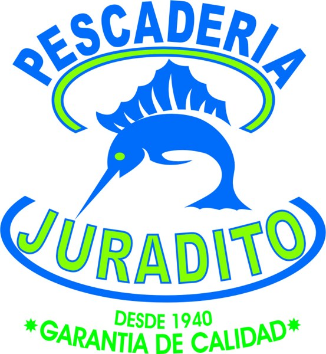
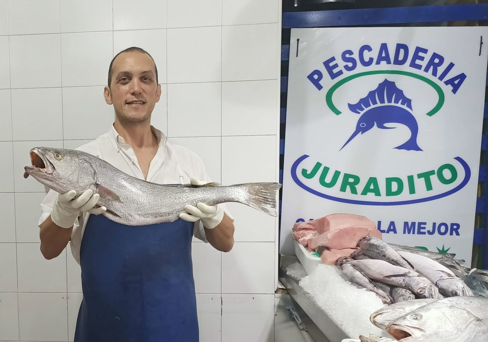
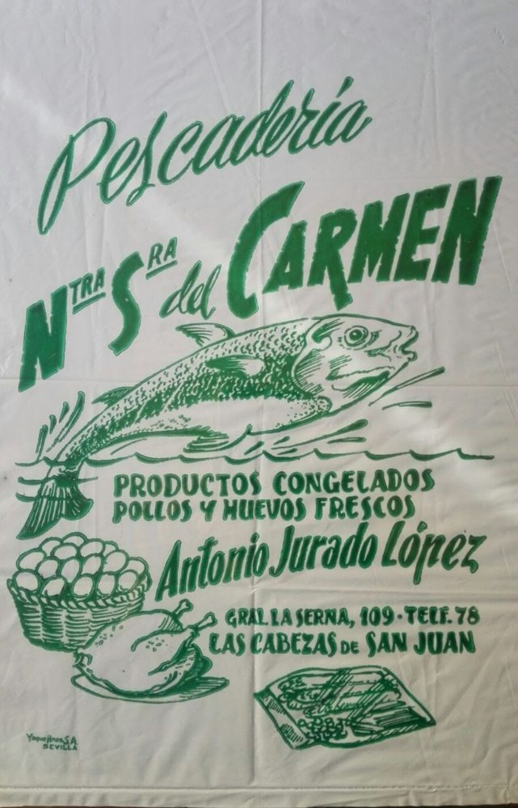
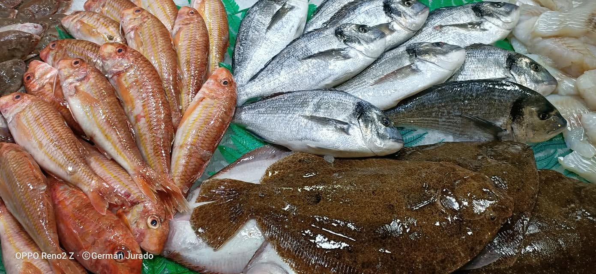
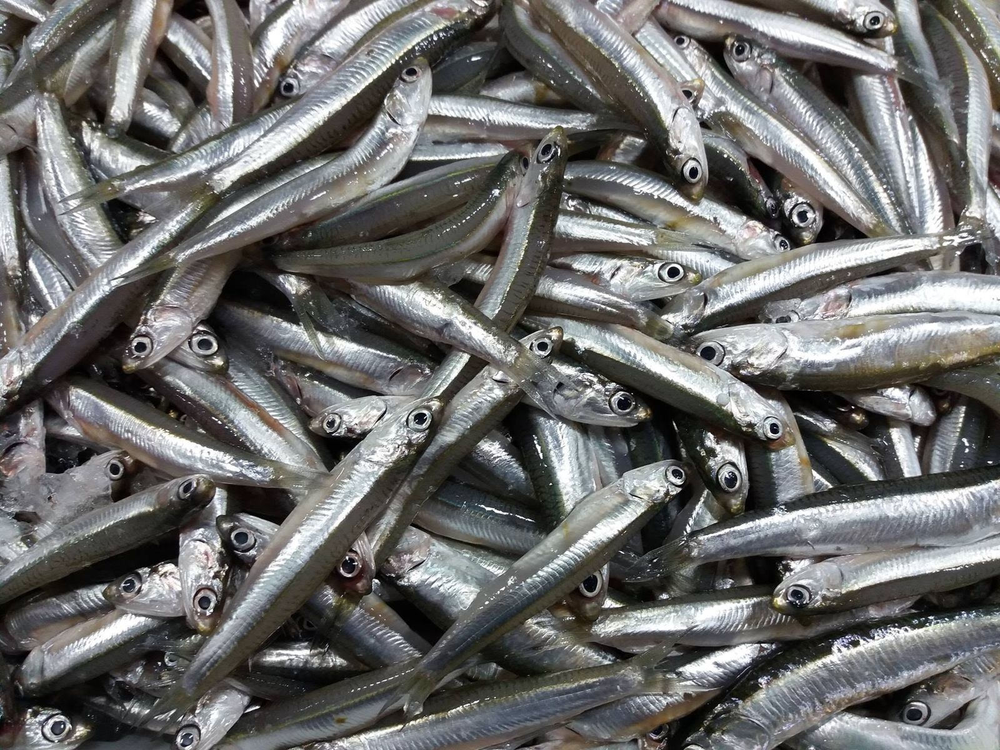
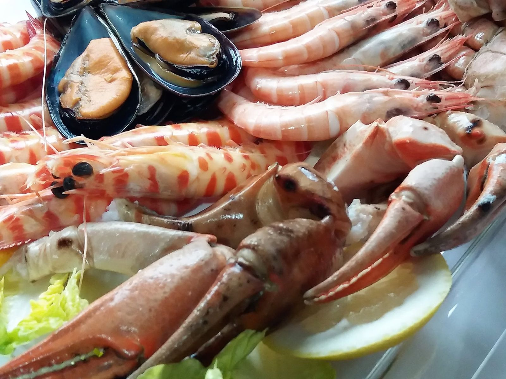
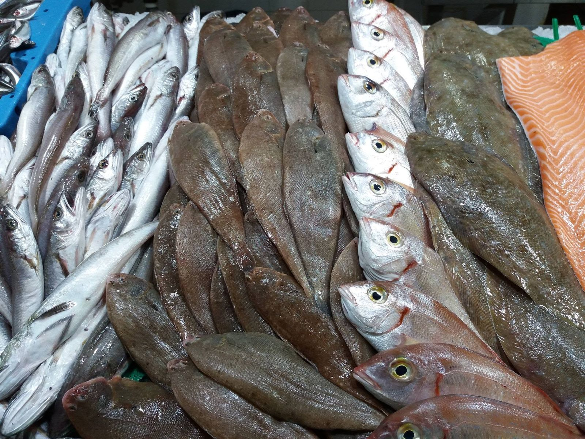
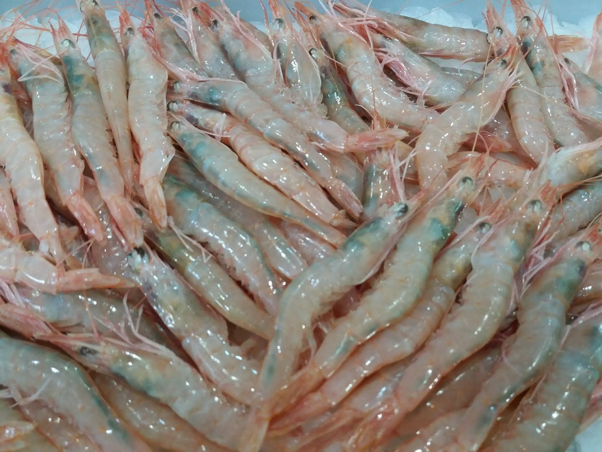
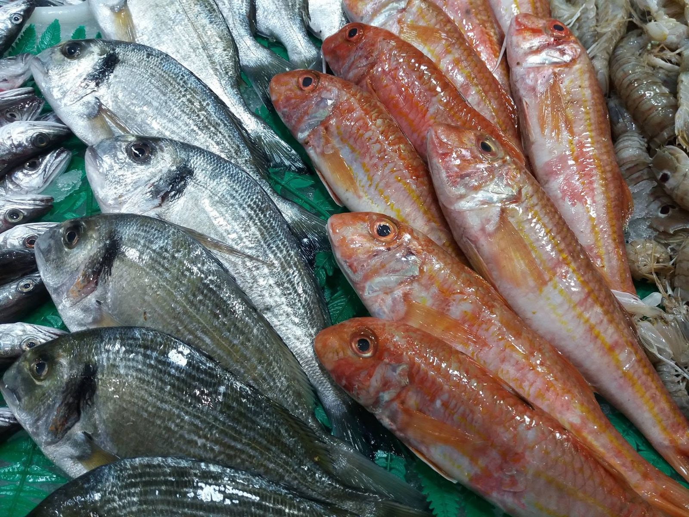

Pescados y mariscos desde 1940 · Garantía de calidad
Mercado de Abastos de Las Cabezas de San Juan · Puestos 9 y 10
Todo empezó en 1940 con Antonio Jurado, «Juradito», que fundó la pescadería y le dio su nombre. Desde entonces llevamos pescado fresco y marisco a las mesas de Las Cabezas de San Juan.
Hoy Germán, su hijo, sigue al frente en el Mercado de Abastos, puestos 9 y 10, con la misma idea de siempre: buen género, bien tratado y al mejor precio.
Cada mañana elegimos el pescado y el marisco y te lo preparamos como lo necesites. Y si no puedes pasarte, mándanos tu encargo por WhatsApp: te lo tenemos listo o te lo llevamos a casa.


La pescadería nació como Pescadería Nuestra Señora del Carmen, en la calle General La Serna, 109, con aquel teléfono de solo dos cifras: el 78. Al frente estaba Antonio Jurado López, y además de pescado se despachaban productos congelados, pollos y huevos frescos.
Con los años, Antonio se hizo tan conocido en el pueblo que la gente dejó de decir «voy a la pescadería del Carmen» para decir «voy a Juradito», su apodo. Y así, de boca en boca, la pescadería acabó tomando su nombre.
Hoy lo seguimos llevando con orgullo. Ha cambiado el sitio y han cambiado las bolsas, pero el oficio sigue en la familia: buen pescado y el trato de siempre.
Pescado del día, de nuestra costa y de lonja, limpio y preparado a tu gusto.
Gambas, langostinos, cigalas, patas de cangrejo, mejillones… fresco y cocido.
Escríbenos al 610 71 33 98 y te dejamos tu pedido preparado.
Te llevamos tu pedido a casa por solo 1,50 € más por pedido.
Mariscadas y encargos para Navidad, Nochevieja y celebraciones. Reserva con tiempo.






Cada día publicamos en Facebook el vídeo del puesto con el pescado y el marisco del día, las ofertas y las novedades. Aquí tienes nuestras últimas publicaciones; se actualizan solas cada vez que publicamos.
Ver nuestra página de FacebookDónde:
Mercado de Abastos de Las Cabezas de San Juan (Sevilla)
Puestos 9 y 10
Horario:
De martes a sábado, por la mañana
Encargos y consultas:
WhatsApp 610 71 33 98 ·
Llamar
Reparto a domicilio:
1,50 € por pedido
Síguenos:
Facebook · PESCADERIA JURADITO